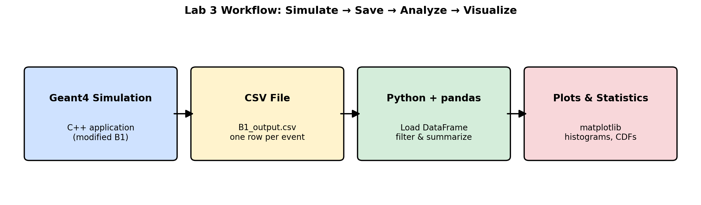
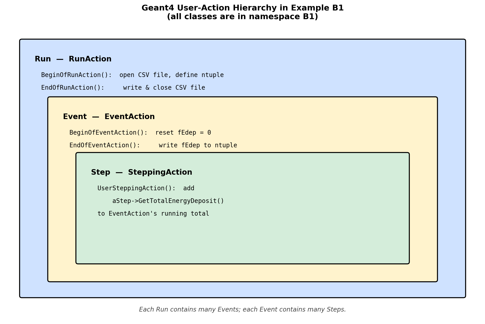
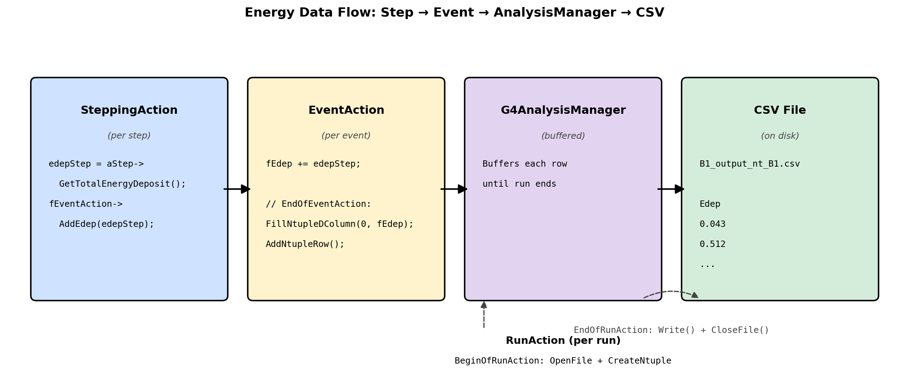
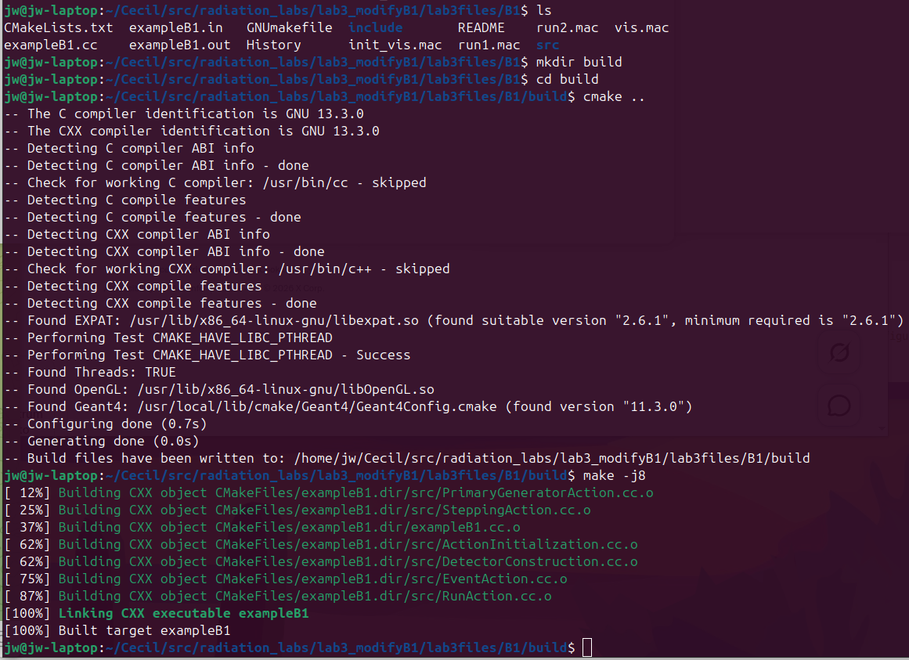
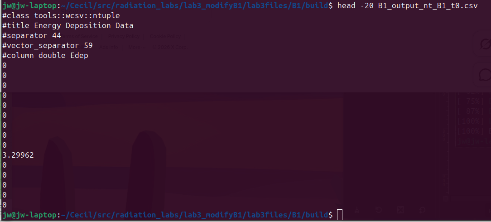
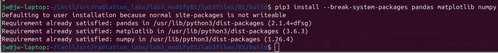
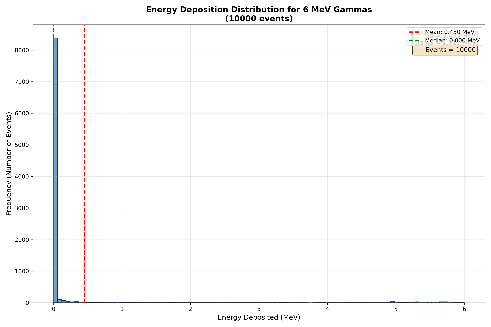
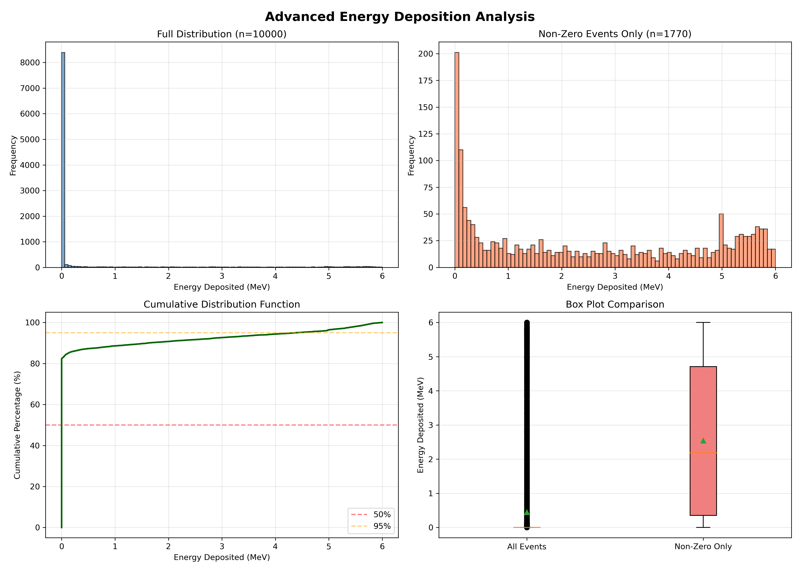
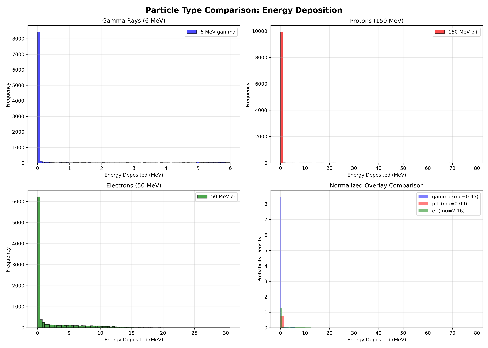

Lab 3: Acquiring and Analyzing Simulation Data
Learning Objectives
In this lab, you will bridge the gap between simulation and analysis. You will modify the C++ source code of a Geant4 application to save data and then use Python to analyze and visualize that data. By the end of this session, you will be able to:
- Understand the basic structure of Geant4 user action classes
- Modify C++ code to implement the
G4AnalysisManagerfor data output - Save simulation results to CSV file format for universal compatibility
- Write Python scripts using the
pandasandmatplotliblibraries - Load simulation data into pandas DataFrames
- Create and customize histograms to visualize distributions
- Calculate descriptive statistics (mean, standard deviation, percentiles) from data
- Filter and manipulate data using pandas operations
- Compare multiple datasets and create multi-plot figures
Introduction
A simulation that produces no output is not very useful. To perform scientific analysis, we need to “score” quantities of interest—like the energy deposited in a detector—and save this data to a file. In this lab, you will learn the modern, standard way to do this in Geant4 using a special class called G4AnalysisManager. We will configure it to save the energy deposited in each event into a simple text-based CSV (Comma-Separated Values) file.

Once we have the data, we will switch hats from a simulation user to a data analyst. We will use the powerful Python programming language along with two essential libraries: pandas for data manipulation and matplotlib for plotting. You will write a script to read the CSV file and generate a histogram, which is a graph that shows the frequency distribution of the energy deposition values. This process—simulate, save, analyze, visualize—is a fundamental cycle in computational science.
Prerequisites
Before you begin, ensure you have the following:
- Completed Lab 2 (successfully built and ran Example B1)
- Text editor for C++ code (gedit, nano, or VS Code)
- Basic understanding of C++ syntax (we’ll guide you through the modifications)
- Python 3 installed (should be pre-installed on Ubuntu)
Pre-Lab Questions
- What is a CSV file? Why is it a good choice for this lab compared to a more complex format like ROOT?
- What is a histogram and what does it show?
- Briefly describe the roles of the
pandasandmatplotlibPython libraries. - In Geant4, what is the difference between a “Run”, an “Event”, and a “Step”?
- What does it mean to “score” a quantity in a simulation?
Step 1: Set Up the Lab and Review the Code Structure
Create a new directory for this lab and copy the B1 example into it, just as you did in Lab 2:
mkdir -p ~/g4-labs/lab3 cd ~/g4-labs/lab3 cp -r ~/geant4-v11.3.2/examples/basic/B1 . cd B1Before we start modifying, let’s understand the key files and the Geant4 action hierarchy:

Geant4 User Action Classes In the modern B1 example, all of these classes live inside
namespace B1 { ... }. The header and source files do not carry aB1filename prefix — for example, the run-action class is declared asclass RunActioninsidenamespace B1, ininclude/RunAction.hh. Every code addition you make in this lab will go inside an existingnamespace B1block in the corresponding.ccfile.Familiarize yourself with these key files:
include/RunAction.hh&src/RunAction.cc:- Controls actions at the beginning and end of a Run (a collection of events)
- We will edit the source file to open, write, and close the CSV output
include/EventAction.hh&src/EventAction.cc:- Controls actions at the beginning and end of each Event (simulation of one primary particle)
- We will edit the source file to record one row of CSV data per event
src/SteppingAction.cc:- Executed at every single Step a particle takes through the geometry
- The example already collects per-step energy here. We will not modify this file.
Open
src/SteppingAction.ccin a text editor and read throughUserSteppingAction:gedit src/SteppingAction.cc &Notice that the example already extracts each step’s energy deposit and adds it to the event total via
fEventAction->AddEdep(edepStep). The data lives in memory but never reaches disk — fixing that is what this lab is about.
Step 2: Modify C++ Code to Save Data
What the example already does
Before we add anything, look at how energy already flows through the unmodified B1 example. Open these three files in your editor and find the lines below — you do not need to change them:
include/EventAction.hhalready declares the helper and the per-event accumulator:void AddEdep(G4double edep) { fEdep += edep; } G4double fEdep = 0.;src/EventAction.ccalready resetsfEdepat the start of each event and forwards it to the run action at the end:void EventAction::BeginOfEventAction(const G4Event*) { fEdep = 0.; } void EventAction::EndOfEventAction(const G4Event*) { fRunAction->AddEdep(fEdep); }src/SteppingAction.ccalready accumulates each step’s deposit into the event total:G4double edepStep = step->GetTotalEnergyDeposit(); fEventAction->AddEdep(edepStep);
So the per-step → per-event → per-run pipeline is already wired up. The energy lands in fEdep at the end of each event. Our only job in this lab is to also write that value to a CSV file.
What we’ll change
There are exactly two files to edit:
src/RunAction.cc— set up the CSV file at the start of the run and write/close it at the end.src/EventAction.cc— at the end of each event, writefEdepas one new row of the CSV.
That’s it. Two #include additions and ~12 new lines of code in total.

Modification 1: RunAction.cc
We use G4AnalysisManager, Geant4’s built-in writer that supports CSV, ROOT, XML, and HDF5. We’ll use CSV.
Open
src/RunAction.cc:gedit src/RunAction.cc &Add the analysis-manager header near the other
#includelines at the top:#include "G4AnalysisManager.hh"Inside
RunAction::BeginOfRunAction(const G4Run*), add the following block (anywhere inside the function body is fine — putting it at the top is conventional):// --- Lab 3 addition: open CSV and define the per-event ntuple --- auto analysisManager = G4AnalysisManager::Instance(); analysisManager->SetDefaultFileType("csv"); analysisManager->OpenFile("B1_output"); analysisManager->CreateNtuple("B1", "Energy Deposition Data"); analysisManager->CreateNtupleDColumn("Edep"); // column 0 analysisManager->FinishNtuple();What this does: Tells the analysis manager to write CSV, gives the file a name (
B1_output), and declares one ntuple column calledEdep. Each row will hold one event’sfEdep.Inside
RunAction::EndOfRunAction(const G4Run* run), add the following at the very end of the function (after the existingG4coutprint block):// --- Lab 3 addition: flush and close the CSV --- auto analysisManager = G4AnalysisManager::Instance(); analysisManager->Write(); analysisManager->CloseFile();
Modification 2: EventAction.cc
Open
src/EventAction.cc:gedit src/EventAction.cc &Add the analysis-manager header near the top:
#include "G4AnalysisManager.hh"Find the existing
EventAction::EndOfEventActionfunction. It currently looks like this — do not retype it, you are only locating it:void EventAction::EndOfEventAction(const G4Event*) { // accumulate statistics in run action fRunAction->AddEdep(fEdep); }Inside that function, after the existing
fRunAction->AddEdep(fEdep);line and before the closing}, paste these four lines (and only these four lines):// --- Lab 3 addition: also write fEdep to the CSV --- auto analysisManager = G4AnalysisManager::Instance(); analysisManager->FillNtupleDColumn(0, fEdep); analysisManager->AddNtupleRow();After your edit, the complete function should read:
void EventAction::EndOfEventAction(const G4Event*) { // accumulate statistics in run action fRunAction->AddEdep(fEdep); // --- Lab 3 addition: also write fEdep to the CSV --- auto analysisManager = G4AnalysisManager::Instance(); analysisManager->FillNtupleDColumn(0, fEdep); analysisManager->AddNtupleRow(); }What this does: Each event ends with one new row in the CSV containing the total energy deposited in the scoring volume during that event.
Summary of Modifications
You’ve now modified two files:
| File | Change |
|---|---|
src/RunAction.cc |
Add G4AnalysisManager.hh; open the CSV in BeginOfRunAction, write/close it in EndOfRunAction |
src/EventAction.cc |
Add G4AnalysisManager.hh; in EndOfEventAction, fill one ntuple row per event |
Note that EventAction.hh, SteppingAction.cc, and the energy-accumulation logic itself were left untouched — the example already had everything we needed up to the point of writing to disk.
Step 3: Compile and Run the Modified Application
Now let’s compile your modified code and generate some data!
Navigate to the build directory (create one if it doesn’t exist):
mkdir -p build cd buildConfigure the build with CMake:
cmake ..Compile the modified application:
make -j$(nproc)If you encounter errors, carefully check your code modifications against the instructions. Common issues:
- Missing semicolons
- Incorrect placement of code
- Typos in variable names

Create a macro file for data collection. In the
B1directory (notbuild), createlab3.mac:cd .. nano lab3.macAdd these contents:
# Lab 3 Data Collection Run # Simulate 10,000 events with default 6 MeV gammas # Force single-threaded mode so we get ONE CSV file, not one per worker. # Must come BEFORE /run/initialize. /run/numberOfThreads 1 /run/initialize /run/printProgress 1000 /run/beamOn 10000This will run 10,000 events and print progress every 1,000 events.
/run/numberOfThreads 1keeps Geant4 from running multi-threaded, which would otherwise produce one CSV file per worker thread.Run the simulation:
cd build ./exampleB1 ../lab3.macAfter completion, list the CSV files:
ls -lh *.csvYou should see one file named
B1_output_nt_B1_t0.csv. Geant4’s CSV writer always appends a_tNworker-thread suffix; with one thread, that’s_t0. If you see multiple_tN.csvfiles, you forgot/run/numberOfThreads 1— delete them and re-run.View the first few lines:
head -20 B1_output_nt_B1_t0.csvYou should see a header row followed by numerical energy values in MeV.

Step 4: Install Python Analysis Libraries
Before we can analyze our data, we need to install the required Python packages.
First, check if pip is installed:
pip3 --versionIf needed, install pip:
sudo apt install python3-pipInstall pandas and matplotlib:
pip3 install --break-system-packages pandas matplotlib numpyWhy the
--break-system-packagesflag? Recent versions of Ubuntu (24.04+) follow PEP 668 and mark the system Python environment as “externally managed”, so a plainpip3 install pandaswill refuse to run with anerror: externally-managed-environmentmessage. The flag tells pip to install into the user site-packages directory anyway, which is fine for this VM-based course where we are not maintaining the host system. (In a production environment you would create a virtual environment withpython3 -m venvinstead.)These packages provide:
- pandas: Data manipulation and analysis
- matplotlib: Creating visualizations and plots
- numpy: Numerical computing (dependency for pandas)

Verify the installation:
python3 -c "import pandas; import matplotlib; print('Success!')"
Step 5: Analyze the Data with Python - Basic Analysis
Now let’s create a Python script to analyze our simulation data.
In your B1/build directory, create analyze_basic.py:
nano analyze_basic.pyPaste the following content. Important: the code must start at column 0 (no leading whitespace), or Python will reject it with IndentationError: unexpected indent.
import pandas as pd
import matplotlib.pyplot as plt
# --- Load the Data ---
# Geant4's CSV output begins with metadata lines starting with '#'
# (e.g. "#class tools::wcsv::ntuple", "#column double Edep").
# We tell pandas to skip those and supply the column name ourselves.
print("=" * 50)
print("GEANT4 SIMULATION DATA ANALYSIS")
print("=" * 50)
print("\nReading data from B1_output_nt_B1_t0.csv...")
data = pd.read_csv('B1_output_nt_B1_t0.csv',
comment='#', header=None, names=['Edep'])
print(f"Data loaded: {len(data)} events, shape {data.shape}")
print("\nFirst 10 energy deposition values (MeV):")
print(data.head(10))
# --- Basic Statistics ---
print("\n" + "=" * 50)
print("BASIC STATISTICS")
print("=" * 50)
mean_edep = data['Edep'].mean()
std_edep = data['Edep'].std()
median_edep = data['Edep'].median()
print(f"Mean Energy Deposition: {mean_edep:.4f} MeV")
print(f"Standard Deviation: {std_edep:.4f} MeV")
print(f"Median: {median_edep:.4f} MeV")
print(f"Minimum: {data['Edep'].min():.4f} MeV")
print(f"Maximum: {data['Edep'].max():.4f} MeV")
percentiles = data['Edep'].quantile([0.25, 0.5, 0.75, 0.90, 0.95])
print(f"\nPercentiles:")
print(f" 25th percentile (Q1): {percentiles[0.25]:.4f} MeV")
print(f" 50th percentile (median): {percentiles[0.50]:.4f} MeV")
print(f" 75th percentile (Q3): {percentiles[0.75]:.4f} MeV")
print(f" 90th percentile: {percentiles[0.90]:.4f} MeV")
print(f" 95th percentile: {percentiles[0.95]:.4f} MeV")
# --- Histogram ---
plt.figure(figsize=(12, 8))
plt.hist(data['Edep'], bins=100, alpha=0.75,
color='steelblue', edgecolor='black')
plt.axvline(mean_edep, color='red', linestyle='--',
linewidth=2, label=f'Mean: {mean_edep:.3f} MeV')
plt.axvline(median_edep, color='green', linestyle='--',
linewidth=2, label=f'Median: {median_edep:.3f} MeV')
plt.title(f'Energy Deposition Distribution for 6 MeV Gammas\n({len(data)} events)',
fontsize=14, fontweight='bold')
plt.xlabel('Energy Deposited (MeV)', fontsize=12)
plt.ylabel('Frequency (Number of Events)', fontsize=12)
plt.grid(True, alpha=0.3)
plt.legend(fontsize=10)
stats_text = f'mu = {mean_edep:.3f} MeV\nsigma = {std_edep:.3f} MeV\nEvents = {len(data)}'
plt.text(0.98, 0.97, stats_text, transform=plt.gca().transAxes,
fontsize=11, verticalalignment='top', horizontalalignment='right',
bbox=dict(boxstyle='round', facecolor='wheat', alpha=0.8))
plt.tight_layout()
plt.savefig('edep_histogram.png', dpi=300)
print("\nHistogram saved to edep_histogram.png")Save and close, then run:
python3 analyze_basic.pyView the generated histogram:
eog edep_histogram.png(Or use your preferred image viewer.)

Step 6: Advanced Analysis - Data Filtering and Comparison
Let’s explore pandas’ powerful data manipulation capabilities by filtering the data and creating comparative visualizations.
Create analyze_advanced.py:
nano analyze_advanced.pyPaste the following content (must start at column 0 — no leading whitespace):
import pandas as pd
import matplotlib.pyplot as plt
import numpy as np
print("Loading simulation data...")
data = pd.read_csv('B1_output_nt_B1_t0.csv',
comment='#', header=None, names=['Edep'])
# --- Data Filtering Examples ---
print("\n" + "=" * 50)
print("DATA FILTERING EXAMPLES")
print("=" * 50)
high_energy = data[data['Edep'] > 4.0]
print(f"\nEvents with Edep > 4.0 MeV: {len(high_energy)} "
f"({len(high_energy)/len(data)*100:.1f}%)")
low_energy = data[data['Edep'] < 1.0]
print(f"Events with Edep < 1.0 MeV: {len(low_energy)} "
f"({len(low_energy)/len(data)*100:.1f}%)")
zero_energy = data[data['Edep'] == 0.0]
print(f"Events with Edep = 0.0 MeV: {len(zero_energy)} "
f"({len(zero_energy)/len(data)*100:.1f}%)")
print(" -> These are events where the particle passed through "
"without interacting")
mid_range = data[(data['Edep'] >= 2.0) & (data['Edep'] <= 4.0)]
print(f"Events with 2.0 <= Edep <= 4.0 MeV: {len(mid_range)} "
f"({len(mid_range)/len(data)*100:.1f}%)")
# --- Multi-Panel Figure ---
fig, axes = plt.subplots(2, 2, figsize=(14, 10))
fig.suptitle('Advanced Energy Deposition Analysis',
fontsize=16, fontweight='bold')
# Panel 1: Full distribution
ax1 = axes[0, 0]
ax1.hist(data['Edep'], bins=100, color='steelblue',
alpha=0.7, edgecolor='black')
ax1.set_xlabel('Energy Deposited (MeV)')
ax1.set_ylabel('Frequency')
ax1.set_title(f'Full Distribution (n={len(data)})')
ax1.grid(True, alpha=0.3)
# Panel 2: Excluding zero-energy events
ax2 = axes[0, 1]
non_zero = data[data['Edep'] > 0]
ax2.hist(non_zero['Edep'], bins=80, color='coral',
alpha=0.7, edgecolor='black')
ax2.set_xlabel('Energy Deposited (MeV)')
ax2.set_ylabel('Frequency')
ax2.set_title(f'Non-Zero Events Only (n={len(non_zero)})')
ax2.grid(True, alpha=0.3)
# Panel 3: Cumulative distribution
ax3 = axes[1, 0]
sorted_data = np.sort(data['Edep'])
cumulative = np.arange(1, len(sorted_data) + 1) / len(sorted_data) * 100
ax3.plot(sorted_data, cumulative, linewidth=2, color='darkgreen')
ax3.set_xlabel('Energy Deposited (MeV)')
ax3.set_ylabel('Cumulative Percentage (%)')
ax3.set_title('Cumulative Distribution Function')
ax3.grid(True, alpha=0.3)
ax3.axhline(50, color='red', linestyle='--', alpha=0.5, label='50%')
ax3.axhline(95, color='orange', linestyle='--', alpha=0.5, label='95%')
ax3.legend()
# Panel 4: Box plot
ax4 = axes[1, 1]
box_data = [data['Edep'], non_zero['Edep']]
bp = ax4.boxplot(box_data, labels=['All Events', 'Non-Zero Only'],
patch_artist=True, showmeans=True)
for patch, color in zip(bp['boxes'], ['lightblue', 'lightcoral']):
patch.set_facecolor(color)
ax4.set_ylabel('Energy Deposited (MeV)')
ax4.set_title('Box Plot Comparison')
ax4.grid(True, alpha=0.3, axis='y')
plt.tight_layout()
plt.savefig('edep_advanced_analysis.png', dpi=300)
print("\nAdvanced analysis figure saved to edep_advanced_analysis.png")
# --- Statistical Comparison ---
print("\n" + "=" * 50)
print("STATISTICAL COMPARISON")
print("=" * 50)
print("\nAll Events:")
print(f" Mean: {data['Edep'].mean():.4f} MeV")
print(f" Median: {data['Edep'].median():.4f} MeV")
print(f" Std: {data['Edep'].std():.4f} MeV")
print("\nNon-Zero Events Only:")
print(f" Mean: {non_zero['Edep'].mean():.4f} MeV")
print(f" Median: {non_zero['Edep'].median():.4f} MeV")
print(f" Std: {non_zero['Edep'].std():.4f} MeV")
print("\n" + "=" * 50)
print("DETAILED SUMMARY STATISTICS")
print("=" * 50)
print(data['Edep'].describe())Run it and view the figure:
python3 analyze_advanced.py
eog edep_advanced_analysis.png
Step 7: Comparing Different Particle Types
Let’s generate data for different particles and compare their energy deposition patterns.
Create macro files for different particles. First, protons:
cd ~/g4-labs/lab3/B1 nano proton_beam.macAdd:
/run/numberOfThreads 1 /run/initialize /gun/particle proton /gun/energy 150 MeV /run/printProgress 1000 /run/beamOn 10000Create electron beam macro:
nano electron_beam.macAdd:
/run/numberOfThreads 1 /run/initialize /gun/particle e- /gun/energy 50 MeV /run/printProgress 1000 /run/beamOn 10000Run simulations and rename output files. Remember: each run produces
B1_output_nt_B1_t0.csv, so we rename it after each run before it gets overwritten.cd build # Run gamma simulation (already done, but let's be explicit) ./exampleB1 ../lab3.mac mv B1_output_nt_B1_t0.csv gamma_6MeV.csv # Run proton simulation ./exampleB1 ../proton_beam.mac mv B1_output_nt_B1_t0.csv proton_150MeV.csv # Run electron simulation ./exampleB1 ../electron_beam.mac mv B1_output_nt_B1_t0.csv electron_50MeV.csv
Create the comparison script:
nano compare_particles.pyPaste the following content (must start at column 0 — no leading whitespace):
import pandas as pd
import matplotlib.pyplot as plt
# All three CSVs were produced by the modified B1, so they share the
# same Geant4 header format. We supply the column name ourselves.
read_kwargs = dict(comment='#', header=None, names=['Edep'])
print("Loading particle data...")
gamma_data = pd.read_csv('gamma_6MeV.csv', **read_kwargs)
proton_data = pd.read_csv('proton_150MeV.csv', **read_kwargs)
electron_data = pd.read_csv('electron_50MeV.csv', **read_kwargs)
fig, axes = plt.subplots(2, 2, figsize=(14, 10))
fig.suptitle('Particle Type Comparison: Energy Deposition',
fontsize=16, fontweight='bold')
ax1 = axes[0, 0]
ax1.hist(gamma_data['Edep'], bins=80, alpha=0.7,
color='blue', label='6 MeV gamma', edgecolor='black')
ax1.set_xlabel('Energy Deposited (MeV)')
ax1.set_ylabel('Frequency')
ax1.set_title('Gamma Rays (6 MeV)')
ax1.legend()
ax1.grid(True, alpha=0.3)
ax2 = axes[0, 1]
ax2.hist(proton_data['Edep'], bins=80, alpha=0.7,
color='red', label='150 MeV p+', edgecolor='black')
ax2.set_xlabel('Energy Deposited (MeV)')
ax2.set_ylabel('Frequency')
ax2.set_title('Protons (150 MeV)')
ax2.legend()
ax2.grid(True, alpha=0.3)
ax3 = axes[1, 0]
ax3.hist(electron_data['Edep'], bins=80, alpha=0.7,
color='green', label='50 MeV e-', edgecolor='black')
ax3.set_xlabel('Energy Deposited (MeV)')
ax3.set_ylabel('Frequency')
ax3.set_title('Electrons (50 MeV)')
ax3.legend()
ax3.grid(True, alpha=0.3)
# Normalized overlay
ax4 = axes[1, 1]
ax4.hist(gamma_data['Edep'], bins=60, alpha=0.5, color='blue',
label=f'gamma (mu={gamma_data["Edep"].mean():.2f})', density=True)
ax4.hist(proton_data['Edep'], bins=60, alpha=0.5, color='red',
label=f'p+ (mu={proton_data["Edep"].mean():.2f})', density=True)
ax4.hist(electron_data['Edep'], bins=60, alpha=0.5, color='green',
label=f'e- (mu={electron_data["Edep"].mean():.2f})', density=True)
ax4.set_xlabel('Energy Deposited (MeV)')
ax4.set_ylabel('Probability Density')
ax4.set_title('Normalized Overlay Comparison')
ax4.legend()
ax4.grid(True, alpha=0.3)
plt.tight_layout()
plt.savefig('particle_comparison.png', dpi=300)
print("Comparison figure saved to particle_comparison.png")
print("\n" + "=" * 60)
print("STATISTICAL COMPARISON BY PARTICLE TYPE")
print("=" * 60)
for name, df in [('Gamma (6 MeV)', gamma_data),
('Proton (150 MeV)', proton_data),
('Electron (50 MeV)', electron_data)]:
n_zero = (df['Edep'] == 0).sum()
print(f"\n{name}:")
print(f" Mean: {df['Edep'].mean():.4f} MeV")
print(f" Median: {df['Edep'].median():.4f} MeV")
print(f" Std Dev: {df['Edep'].std():.4f} MeV")
print(f" Max: {df['Edep'].max():.4f} MeV")
print(f" Zero events: {n_zero} ({n_zero/len(df)*100:.1f}%)")Run it:
python3 compare_particles.py
Analysis Questions
Now that you have generated and analyzed the data, answer these questions:
Part 1: Understanding the Distribution
Describe the shape of the energy deposition histogram for gamma rays. Is the energy deposition the same for every event?
Why is there a distribution of values instead of a single value? Consider:
- Stochastic nature of particle interactions
- Different interaction mechanisms (photoelectric, Compton, pair production)
- Variation in secondary particle production
The peak of the distribution represents the most probable energy deposition. What is this value approximately? How does it compare to the initial energy of the gamma particle (6 MeV)?
Explain why the deposited energy is typically lower than the incident energy. (Hint: Does the particle always deposit all of its energy in the detector?)
Part 2: Understanding Zero Energy Events
What percentage of events have zero energy deposition? What does this represent physically?
Why would a 6 MeV gamma ray pass through the detector without depositing any energy?
Part 3: Comparing Particle Types
Compare the mean energy deposition for:
- 6 MeV gammas
- 150 MeV protons
- 50 MeV electrons
Which particle type deposits the most energy on average? Why?
Which particle type has the most consistent energy deposition (smallest standard deviation)? Explain this in terms of the physics of how each particle type interacts with matter.
Notice the shape differences in the distributions:
- Gammas: Broad, exponential-like distribution
- Protons: Sharp, peaked distribution
- Electrons: Intermediate characteristics
Explain these shape differences based on the interaction mechanisms of each particle type.
Part 4: Pandas Data Analysis
In the advanced analysis script, we filtered events with
data[data['Edep'] > 4.0]. Explain in plain English what this pandas operation does.What is the advantage of using pandas DataFrames versus manipulating the CSV file directly with basic Python?
The cumulative distribution plot shows what percentage of events have energy deposition below a certain value. What is the energy value at which 50% of events fall below? What is this called statistically?
Part 5: Scientific Workflow
Why is CSV a good intermediate format for this analysis workflow (Geant4 → CSV → Python)?
How would you modify the code to save additional information, such as:
- The number of steps per event
- Energy deposited in different detector volumes
- Particle type information for secondary particles
Troubleshooting
Common issues and solutions:
- “No module named ‘pandas’”: Install with
pip3 install --break-system-packages pandas matplotlib numpy. error: externally-managed-environmentfrom pip: Ubuntu 24.04+ marks the system Python as managed (PEP 668). Re-run with--break-system-packages, as shown in Step 4.- Many
B1_output_nt_B1_tN.csvfiles instead of one_t0.csv: Geant4 ran multi-threaded and each worker thread wrote its own CSV. Add/run/numberOfThreads 1to your macro before/run/initialize, delete the per-thread files (rm B1_output_nt_B1_t*.csv), and re-run. - CSV file not found: Make sure you’re running Python from the
builddirectory and that the filename inpd.read_csv(...)matches whatls *.csvshows. - Empty histogram: Check that your CSV file has data and proper column headers
- Compilation errors: Verify all code modifications carefully match the instructions
- G4AnalysisManager errors: Ensure you’ve included the header file in all necessary source files
Verification Checklist
Before completing this lab, verify you can:
Conclusion
You have successfully modified a Geant4 application to output data, run simulations with different particle types, and performed sophisticated data analysis using Python’s pandas and matplotlib libraries. You’ve learned:
- How Geant4’s action classes work together to record simulation data
- The modern approach to data output using G4AnalysisManager
- Essential pandas operations for data manipulation and analysis
- Creating publication-quality visualizations with matplotlib
- The scientific workflow from simulation to analysis to visualization
These skills are fundamental for computational physics and will be used throughout the remainder of this course and in professional scientific computing work.
References
- Geant4 Collaboration. (n.d.). Geant4 Analysis Tools Documentation
- Hrivnacova, I. (2018). Using Geant4 Analysis Manager
- Hrivnacova, I. (2023). Geant4 Analysis Tools Tutorial
- McKinney, W. (2010). Data Structures for Statistical Computing in Python
- Hunter, J. D. (2007). Matplotlib: A 2D Graphics Environment
- The Python Graph Gallery. (n.d.). Histogram Examples
Additional Resources
Optional Extensions
If you finish early or want to explore further:
Add More Columns: Modify the code to save additional data:
- Track length
- Number of steps
- Particle position at end of event
Different Geometries: Modify the detector geometry in
DetectorConstruction.ccand observe how it affects energy depositionEnergy Scan: Create a script that runs simulations at multiple energies (e.g., 1, 2, 4, 6, 8, 10 MeV) and plots how mean energy deposition varies with incident energy
Interactive Plotting: Modify the Python scripts to use
plt.show()for interactive exploration of the dataStatistical Tests: Use scipy to perform statistical tests comparing different datasets (t-tests, KS tests, etc.)